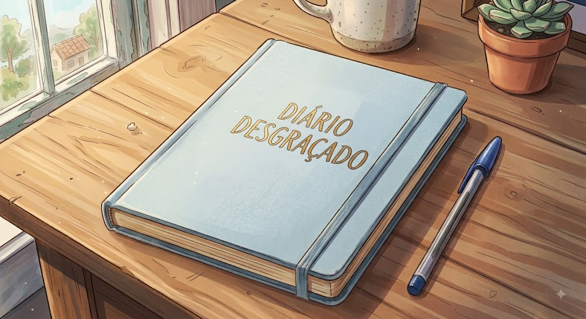

Terça-feira 28/07/2026
Eu preciso tomar vergonha na cara e parar de preguiça uma vez por todas!
Aprender a porcaria do francês de uma vez
E a infeliz da tabuada
Agora falando sério, uma coisa que me incomodou mesmo foi um relacionamento que eu tive recetemente
Me estressou porque a pessoa não sabia oque raios ela queria.
Pra falar a verdade eu e ele começamos a ficar por conta de um amigo em comun
Que iremos apelidar de "Pirulito Pop" e além dele tive muito apoio(que deppois virou esporro)
De meus amigos que os principais iremos chamar de "Galizé","A de 17","Grila","Mendigo", "Cotoco" e o "Ben de Descendentes"
Terça-Feira 11/08/2026
Desda da ultima vez que eu escrevi aconteceu uma porrada de coisa, meu grupinhou de uma dismanchada por umas briga envolvendo quase todo mundo
Menos o Galizé, Pirulito Pop e a Cotoco. Já que a cotoco nem estuda na mesma escola que nós e os outros dois nem tavam sabendo, Enfim.
Agora nós todos nos resolvemos mas o burro do Mendigo quebrou a perna jogando bola com um "extra" da história e "Ele" que foi a pessoa que eu tive a ideia
Para começar a escrever está cada vez mais distante, oque é bom porque isso me ajudou a tirar ele da cabeça.
Por mais que as vezes ocorra de me relembrar de conversas e de pensar coisas que eu poderia ter feito para não deixar morrer
Essa distancia ajudou a me esquecer dele.Na verdade tenho que aprender a parar de ser trouxa.